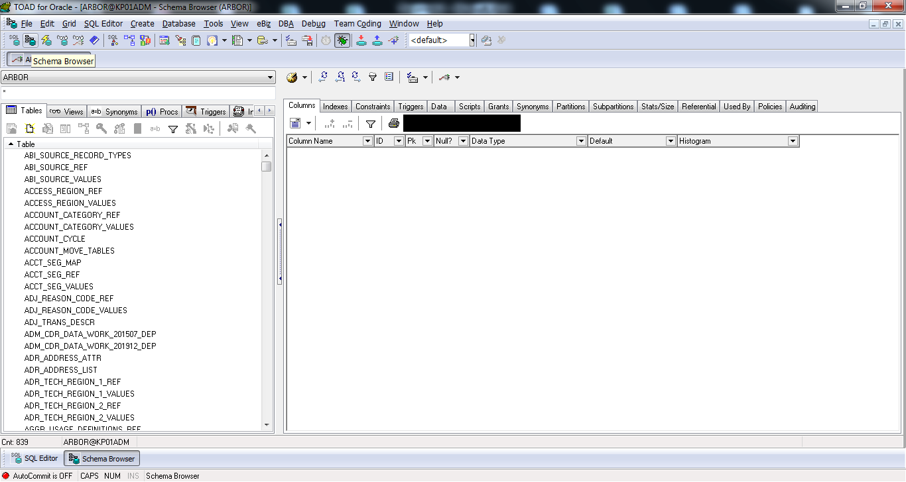
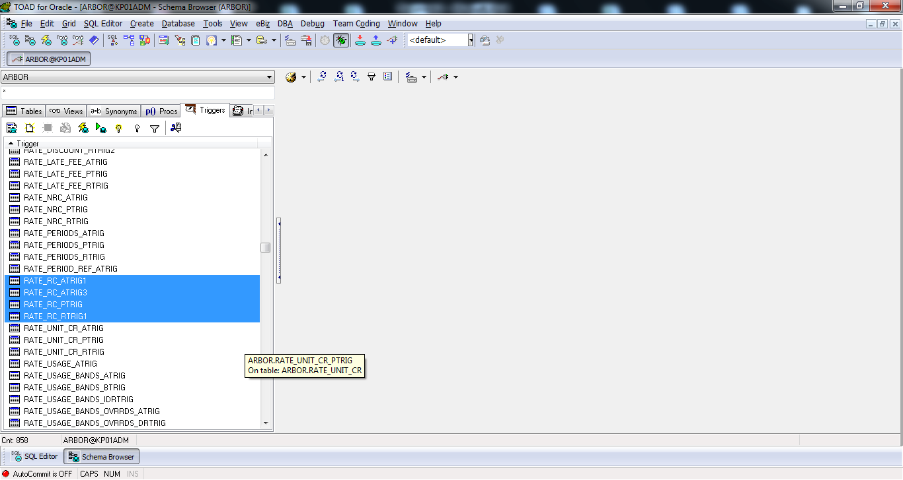
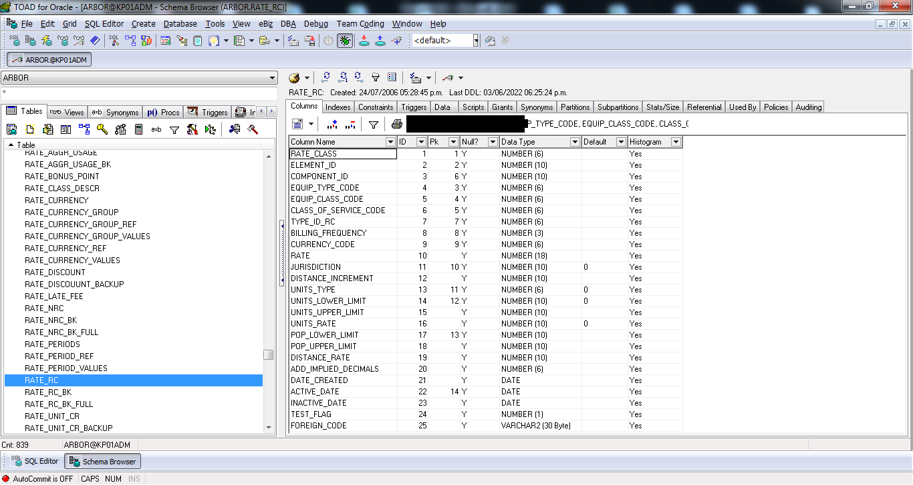
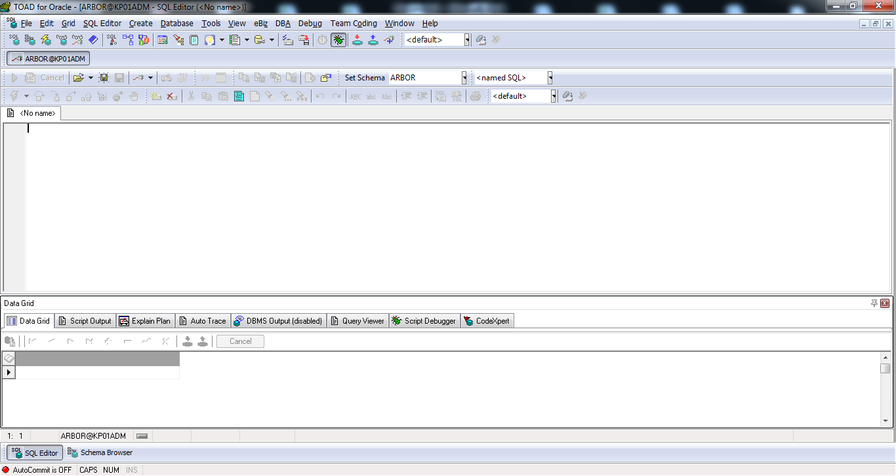
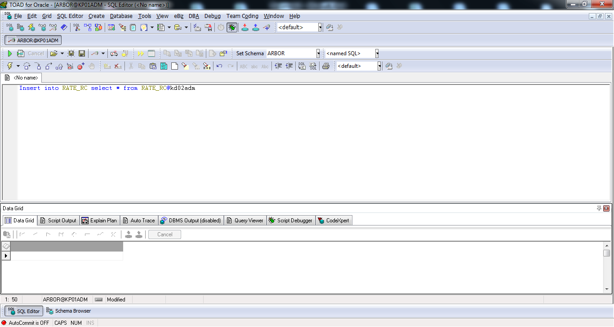
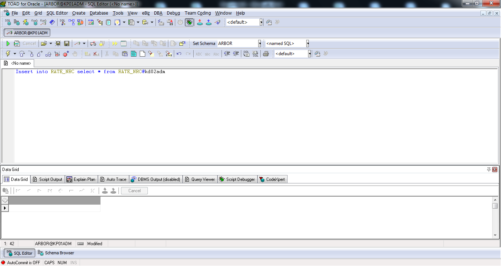
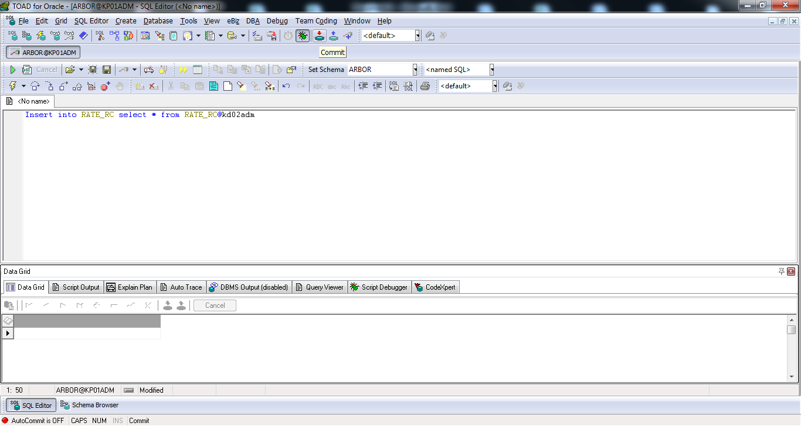

1.- Obtener las Tablas a REPLICAR, desde el correo que envia el grupo de Maigualida, en este caso el ejemplo es con:
RATE_RC / RATE_NRC
2.- Conectar a la BD KP01ADM con el usuario de KENAN
3.- Abrir el SCHEMA BROWSER:

5.-Seleccionar los 4 TRIGGERS con RATE_RC:

6.- Pulsas boton derecho y pulsas Disable Selected.
7.- Se va abrir una ventana y debes de seleccionar “Drop Storage” y aceptar
8.- Ir a la opción Tablas y seleccionas La Tabla RATE_RC (En este ejecmplo) Le das >Boton Derecho y luego le das “Truncate table”
Este procedimiento también aplica desde el paso 1 para la otra Tabla del ejemplo RATE_NRC.
Se puede ejecutar en paralelo hasta aca. Desde el paso 9 en adelante se debe realizar para cada una de las Tablas, es decir:
QUERYS, COMMIT Y COMANDOS de Replicates individual por Tabla a Replicar.

9.- Ahora vas a SQL EDITOR:

10.- Ejecutar el siguiente comando:
Insert into RATE_RC select * from RATE_RC@kd02adm

Como el ejemplo es para las 2 TABLAS, Ejecutamos el QUERY ahora para la otra Tabla:Insert into RATE_NRC select * from RATE_NRC@kd02adm
Tarda algunos 10 segundos aproximadamente.

11.- Darle COMMIT tiene una flecha roja OP escribes COMMIT y lo ejecutas:

12.- Ahora te conectas al servidor SRVFT01 con el usuario kbpp01
13.- Ejecutar el comando cd $ARBORBIN
14.- Ejecutar el comando para replicar:
./replicate.ksh –Uarbor –Pkenan_hpux_2008 –SYNC –TRATE_RC
Contestar con “Y” mayuscula a las dos preguntas que realiza y esperar a que termine el Replicate.